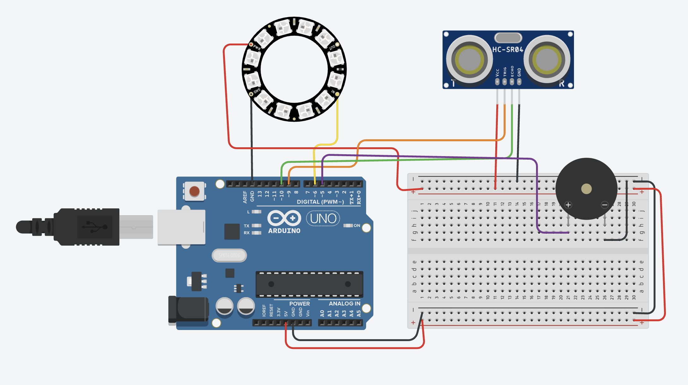

Guía de trabajo
Título de la práctica: Contenedor
Modalidad: Individual o por equipos
Duración estimada: 4 a 6 sesiones
Completa la práctica y entrega mediante un enlace de Tinkercad o una carpeta de Drive con acceso para cualquier persona que tenga el enlace.
Producto final identificado
Construir un contenedor interactivo que cambie luces y sonidos según la distancia detectada, simulando los estados de reposo, actividad, alerta y peligro dentro de una misión de escape room.
Objetivo 1: Investigar cómo comunicar niveles de seguridad
Descripción: Observar ejemplos sencillos de semáforos, alarmas y tableros de estado. Relacionar colores, movimientos de luz y sonidos con las ideas de reposo, actividad, alerta y peligro.
Entrega: Tabla de cuatro filas con el nombre de cada estado, un color, un tipo de luz y un tipo de sonido.
Evaluación: Los cuatro estados se distinguen con claridad y las elecciones se explican con una razón comprensible.
Objetivo 2: Planear los rangos de distancia
Descripción: Medir con una regla distancias de 10, 25 y 50 cm. Predecir qué estado debe activarse en cada zona y elaborar un mapa de proximidad alrededor del contenedor.
Entrega: Dibujo del contenedor con sus cuatro zonas y una tabla de rangos de distancia.
Evaluación: Las zonas no se traslapan, cubren todas las distancias y coinciden con reposo, actividad, alerta y peligro.
Objetivo 3: Diseñar el sistema y sus conexiones
Descripción: Identificar la función del sensor ultrasónico, el aro NeoPixel y el buzzer. Revisar el diagrama y planear dónde colocar cada componente en el contenedor.
Entrega: Diagrama etiquetado y boceto del montaje físico con la ubicación de los componentes.
Evaluación: El diagrama incluye alimentación, tierra y pines de señal correctos; el sensor queda orientado hacia la zona de detección.
Objetivo 4: Probar los componentes por separado
Descripción: Realizar tres pruebas breves: leer una distancia en el monitor serial, encender el aro con un color fijo y producir un tono corto con el buzzer.
Entrega: Registro escrito de las tres pruebas y enlace de Drive con un video breve que muestre qué funcionó.
Evaluación: Cada componente responde por separado y las lecturas del sensor son razonables al compararlas con una regla.
Objetivo 5: Construir los cuatro estados
Descripción: Programar y probar por separado las funciones de reposo, actividad, alerta y peligro usando los efectos de luz y sonido definidos.
Entrega: Video o demostración de los cuatro estados activados uno por uno y tabla con el resultado de cada prueba.
Evaluación: Cada función produce una combinación reconocible y diferente de luz y sonido.
Objetivo 6: Integrar la distancia con las respuestas
Descripción: Unir la lectura del sensor con las cuatro funciones. Acercar un objeto lentamente y comprobar que el contenedor cambia de estado en los rangos planeados.
Entrega: Tabla de pruebas con al menos una distancia por estado, el estado esperado y el estado observado.
Evaluación: El sistema selecciona el estado correcto en las cuatro zonas y no deja distancias sin respuesta.
Objetivo 7: Mejorar la claridad y estabilidad
Descripción: Revisar conexiones, brillo, volumen y cambios entre estados. Corregir falsas lecturas o efectos difíciles de distinguir y organizar el montaje dentro del contenedor.
Entrega: Lista breve con dos problemas encontrados, la corrección aplicada y una prueba final de los cuatro estados.
Evaluación: El montaje es ordenado, los estados se distinguen y el sistema completa tres recorridos de prueba sin fallas importantes.
Materiales
- 1 Arduino Uno
- 1 sensor ultrasónico HC-SR04
- 1 aro NeoPixel de 12 LEDs
- 1 buzzer
- Protoboard
- Cables Dupont
- Fuente de alimentación o cable USB
Descripción general
El contenedor permanece en reposo cuando no hay objetos cerca. Al detectar proximidad, cambia de estado y genera efectos visuales y sonoros para indicar actividad, alerta o peligro.
Explicación del funcionamiento
El sensor HC-SR04 mide la distancia. El programa compara esa lectura con varios rangos y ejecuta una función distinta para cada estado. El aro NeoPixel comunica el nivel de riesgo mediante color y movimiento, mientras el buzzer produce patrones de sonido.
- Más de 50 cm: reposo.
- Entre 26 y 50 cm: actividad.
- Entre 11 y 25 cm: alerta.
- 10 cm o menos: peligro.
Espacio para diagrama
Al subir el archivo del diagrama con este nombre, se mostrará automáticamente en esta sección.

Código completo
#include <Adafruit_NeoPixel.h>
// ---------- PINES ----------
#define PIN_NEOPIXEL 6
#define NUM_PIXELS 12
#define TRIG_PIN 9
#define ECHO_PIN 10
#define BUZZER_PIN 5
// ---------- CONFIGURACIÓN ----------
Adafruit_NeoPixel ring(NUM_PIXELS, PIN_NEOPIXEL, NEO_GRB + NEO_KHZ800);
long duracion;
int distancia;
void setup() {
Serial.begin(9600);
pinMode(TRIG_PIN, OUTPUT);
pinMode(ECHO_PIN, INPUT);
pinMode(BUZZER_PIN, OUTPUT);
ring.begin();
ring.setBrightness(40);
ring.show();
noTone(BUZZER_PIN);
}
void loop() {
distancia = medirDistancia();
Serial.print("Distancia: ");
Serial.print(distancia);
Serial.println(" cm");
if (distancia > 50) {
estadoReposo();
}
else if (distancia > 25 && distancia <= 50) {
estadoActividad();
}
else if (distancia > 10 && distancia <= 25) {
estadoAlerta();
}
else {
estadoPeligro();
}
}
// ---------- MEDICIÓN HC-SR04 ----------
int medirDistancia() {
digitalWrite(TRIG_PIN, LOW);
delayMicroseconds(2);
digitalWrite(TRIG_PIN, HIGH);
delayMicroseconds(10);
digitalWrite(TRIG_PIN, LOW);
duracion = pulseIn(ECHO_PIN, HIGH, 30000);
if (duracion == 0) {
return 999;
}
int distanciaCm = duracion * 0.034 / 2;
return distanciaCm;
}
// ---------- ESTADOS ----------
void estadoReposo() {
ring.setBrightness(25);
colorFijo(0, 20, 120);
sonidoLatidoSuave();
}
void estadoActividad() {
pulsoColor(0, 120, 40);
sonidoBiologico();
}
void estadoAlerta() {
efectoGiro(180, 80, 0, 45);
sonidoAnomalia();
}
void estadoPeligro() {
ring.setBrightness(70);
colorFijo(255, 0, 0);
sonidoContencion();
colorFijo(0, 0, 0);
delay(100);
}
// ---------- EFECTOS DE LUZ ----------
void colorFijo(int rojo, int verde, int azul) {
for (int i = 0; i < NUM_PIXELS; i++) {
ring.setPixelColor(i, ring.Color(rojo, verde, azul));
}
ring.show();
}
void pulsoColor(int rojo, int verde, int azul) {
for (int brillo = 20; brillo <= 70; brillo += 5) {
ring.setBrightness(brillo);
colorFijo(rojo, verde, azul);
delay(25);
}
for (int brillo = 70; brillo >= 20; brillo -= 5) {
ring.setBrightness(brillo);
colorFijo(rojo, verde, azul);
delay(25);
}
}
void efectoGiro(int rojo, int verde, int azul, int espera) {
ring.clear();
for (int i = 0; i < NUM_PIXELS; i++) {
ring.setPixelColor(i, ring.Color(rojo, verde, azul));
ring.show();
delay(espera);
ring.setPixelColor(i, 0);
}
}
// ---------- SONIDOS ----------
void sonidoLatidoSuave() {
tone(BUZZER_PIN, 180);
delay(80);
noTone(BUZZER_PIN);
delay(50);
tone(BUZZER_PIN, 130);
delay(110);
noTone(BUZZER_PIN);
delay(800);
}
void sonidoBiologico() {
tone(BUZZER_PIN, 350);
delay(100);
noTone(BUZZER_PIN);
delay(60);
tone(BUZZER_PIN, 480);
delay(100);
noTone(BUZZER_PIN);
delay(180);
tone(BUZZER_PIN, 300);
delay(160);
noTone(BUZZER_PIN);
delay(300);
}
void sonidoAnomalia() {
tone(BUZZER_PIN, 520);
delay(90);
noTone(BUZZER_PIN);
delay(60);
tone(BUZZER_PIN, 760);
delay(90);
noTone(BUZZER_PIN);
delay(60);
tone(BUZZER_PIN, 420);
delay(120);
noTone(BUZZER_PIN);
delay(220);
}
void sonidoContencion() {
tone(BUZZER_PIN, 900);
delay(90);
tone(BUZZER_PIN, 700);
delay(90);
tone(BUZZER_PIN, 500);
delay(120);
noTone(BUZZER_PIN);
delay(90);
}Producto final
Descripción: Contenedor interactivo que cambia luces y sonidos según la distancia detectada para representar cuatro niveles de seguridad.
Entrega:
- Enlace de Tinkercad del circuito y código, si se realizó en simulador.
- Enlace de Drive con video corto mostrando los cuatro estados del contenedor físico.
- Documento o texto en Drive que explique cómo cambia el sistema según la distancia.
- Los enlaces deben permitir acceso a cualquier persona que los tenga.
Evaluación: El sensor identifica los cuatro rangos, el aro NeoPixel y el buzzer comunican el estado correspondiente, el montaje funciona de manera estable y el alumno explica la relación entre distancia y respuesta.
Preguntas de reflexión
Enviar proyecto
Antes de enviar, verifica que los siete objetivos estén completos y que al menos un enlace de Tinkercad o Drive funcione sin solicitar permiso.
Inicia sesión con Google para habilitar el envío.